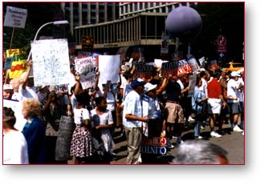
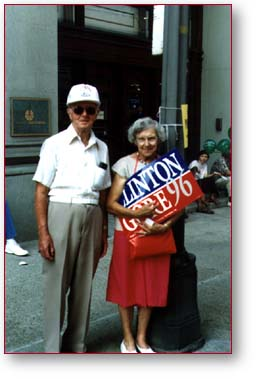

Western Pennsylvania Highlights
Notes from Adrienne and Art The Western Pennsylvania Clinton/Gore operation is up and running! If you're browsing from our area be sure to stop by our regional headquarters and check out the real thing. We love volunteers and could really use the help.
Here's a sampling of what we've been up to. The president visited Robert Morris College in Coraopolis on September 25th and we were extremely busy getting ready for his visit and providing him with a warm welcome.
  Earlier this summer we had several visits from the Dole/Kemp campaign. Clinton/Gore supporters were out in full force, showing their enthusiasm and commitment to President Clinton and Vice President Gore. Over 500 supporters paid a friendly visit to the last Dole rally in Point State Park. By park police estimates, that was nearly one-fourth of their total crowd.
On another note, field operations are moving along, and of course, we are constantly circulationg information about the President's outstanding record and his vision for the 21st Century.
So come and visit us in the Western Pennsylvania office. The best is yet to come.
Paid for by Clinton/Gore ’96 General Committee, Inc.